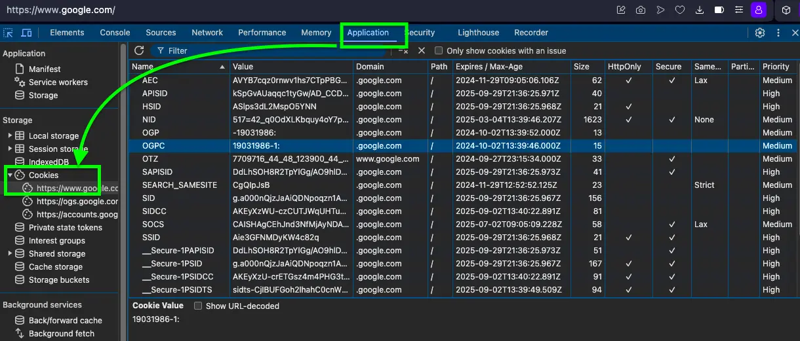
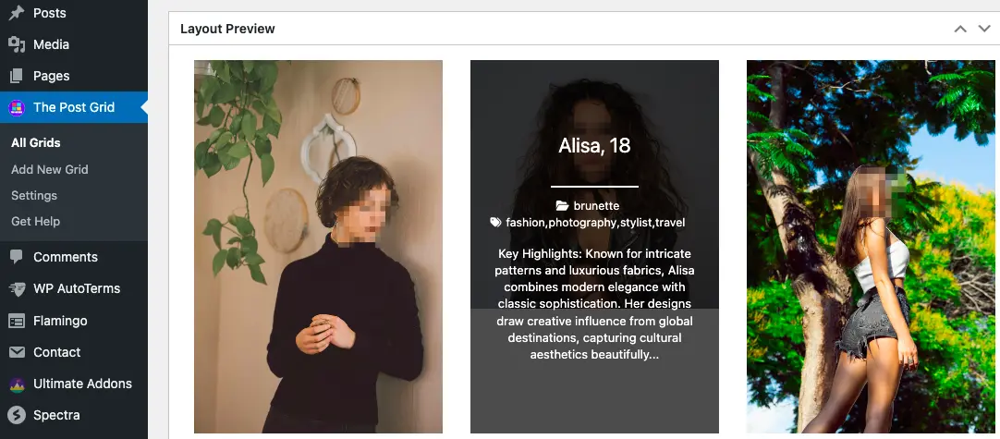
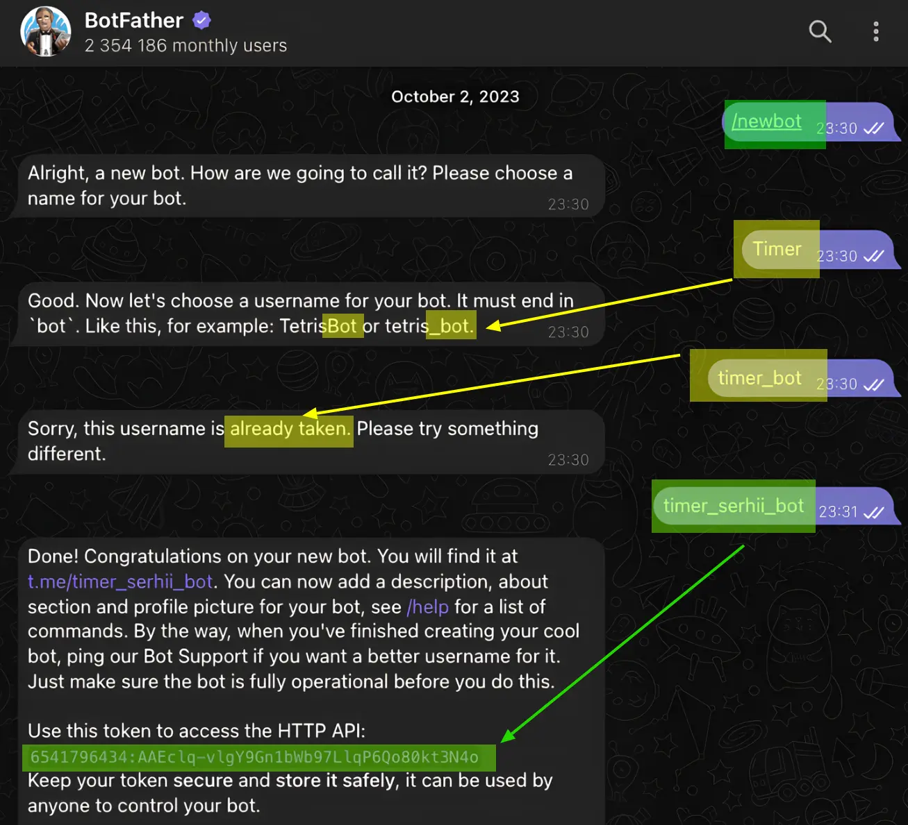

What Does It Mean When a Website Uses Cookies?
Published on September 2, 2024 | Updated December 22, 2025
You've seen the message everywhere: "This site uses cookies." But what does it mean when a website uses cookies? Simply put, website cookies are small text files stored on your computer or phone when you visit a site.
Understanding cookies on websites is crucial for both users and website owners. They play a vital role in making your online experience smoother, but they also bring up important questions about privacy and data protection. In this guide, we'll explore what cookies are, their benefits and drawbacks, how to check if your site uses them, and why website owners need to be mindful of regulations like GDPR.
What Are Cookies on the Website? A Simple Explanation
Think of cookies as little notes a website leaves on your device. These notes help the site remember you and your preferences. Cookies in the browser store information about things like:
- Your browsing activity on that site.
- Your preferences (like language or theme settings).
- Your login status (so you don't have to log in repeatedly).
There are different types of website cookies:
- Session Cookies: These are temporary. Your device deletes them when you close your web browser. They help websites remember what you did during a single visit (like keeping items in your shopping cart).
- Persistent Cookies: These stay on your device for a specific time, even after you close your browser. They remember things like your login details or language preferences for future visits.
- Third-Party Cookies: These are placed by websites different from the one you're currently visiting. They are often used for tracking your browsing across multiple sites and showing targeted advertisements.
Does My Website Use Cookies? How to Check
Wondering does my website use cookies? Many website owners don't realize their site uses cookies, especially when they've added third-party tools like analytics or social media widgets. Here's how to know if your website uses cookies:
Method 1: Check Browser Developer Tools
The easiest way to see what cookies your website uses is through your browser:
- Step 1: Visit your website in any modern browser (Chrome, Firefox, Safari, Opera, or Edge).
- Step 2: Press F12 (or right-click and select "Inspect") to open Developer Tools.
- Step 3: Navigate to the "Application" tab (Chrome/Edge) or "Storage" tab (Firefox).
- Step 4: Look under "Cookies" in the left sidebar - you'll see all cookies your site sets.
Method 2: Use Cookie Scanner Tools
For a more detailed analysis of which cookies your website uses, try these free tools:
- CookieMetrix: Scans your website and provides a complete list of all cookies.
- OneTrust Cookie Compliance: Shows cookies and helps with GDPR compliance.
- Cookie Scanner by Secure Privacy: Free scan that categorizes cookies by type.
- Browser Extensions: Tools like "EditThisCookie" or "Cookie-Editor" let you view cookies in real-time.
Method 3: Review Your Privacy Policy
Your site's privacy policy should list all cookies being used. If you're using tools like Google Analytics, Google Tag Manager, Microsoft Clarity, Facebook Pixel, or any social media widgets, your site definitely uses cookies.
What Are the Advantages of Cookies?
Understanding the advantages of cookies helps explain why they're so widely used on the internet. The benefits of cookies extend beyond just convenience:
For Website Visitors
- Enhanced User Experience: Websites remember your preferences, making each visit smoother and more personalized.
- Time Saved: No need to re-enter information or log in repeatedly to the same website.
- Personalized Content: See content and recommendations relevant to your interests and browsing history.
- Seamless Shopping: Your cart items stay saved even if you close the browser and come back hours or days later.
- Better Website Performance: Cookies help websites load faster by storing certain information locally.
For Website Owners
- Understanding User Behavior: Analytics cookies provide insights into how visitors use your site.
- Improved Website Design: Data from cookies helps identify and fix usability issues.
- Increased Conversions: Personalization through cookies can lead to higher sales and engagement.
- Effective Marketing: Track marketing campaign performance and ROI accurately.
How Cookies Improve Your Browsing Experience
The importance of cookies becomes clear when you compare browsing with and without them:
| Function | With Cookies | Without Cookies |
|---|---|---|
| Personalization | Your favorite items are recommended based on past visits. Example: "Because you viewed these shoes, you might like these." | All recommendations are random and not based on your preferences. Example: "Here are some random products." |
| Authentication | Stay logged in while you browse different pages. Example: "You remain signed in to your account." | You need to log in again each time you move to a new page. Example: "Please log in again to continue." |
| Analytics | Track how users interact with the site to improve it. Example: "We noticed you clicked on this feature often." | Limited data to understand user behavior. Example: "No data on how users interact with the site." |
| Advertising | Show ads relevant to your interests based on browsing. Example: "Ads for gadgets you've searched for." | Ads are generic and not tailored to your interests. Example: "Random ads for products you haven't searched for." |
Disadvantages of Cookies: Potential Risks and Privacy Concerns
While the advantages of cookies are significant, it's important to understand the disadvantages of cookies as well. Cookies aren't without risks, especially concerning your privacy:
Privacy and Tracking Concerns
- Cross-Site Tracking: Third-party cookies can track your online activity across different websites without your explicit consent. This tracking helps build a detailed profile about your habits and interests. Example: Reports suggest some cookies follow you online, collecting data to build profiles that can include personal details like age, family status, location, hobbies, job, financial situation, routines, brand preferences, search history, health concerns, and even political views.
- Intrusive Targeted Advertising: Based on your web browsing history, companies show you personal ads. While sometimes relevant, this can feel invasive, like you're constantly being watched online.
| Recent Search Activity | What Business Ads Will Be Shown to You |
|---|---|
| Financial Stuff | Ads for high-interest loans, debt consolidation services, or credit repair scams. |
| Relations | Ads for expensive divorce lawyers, dating services with questionable privacy, or misleading relationship advice. |
| Political | Ads for extremist political campaigns, controversial petitions, or manipulative political propaganda. |
| Health | Ads for unproven health supplements, aggressive treatment promotions, or online pharmacies with dubious practices. |
| Travel | Ads for timeshare schemes, overpriced travel packages, or deceptive travel insurance offers. |
Security Vulnerabilities
- Cookie Hijacking: If not secured properly, cookies in the browser can be vulnerable. Attackers might steal these cookies (cookie hijacking) to access your online accounts without your password. Example: A hacker could potentially steal a cookie from your computer, use it on their own device, and gain access to your accounts logged in on that website, viewing or stealing personal information.
- Data Breaches: If a website is compromised, stored cookie data could be exposed, potentially revealing sensitive user information.
Legal Requirements: GDPR Compliance and Cookie Consent
When this website uses cookies, there are important legal obligations to consider. Laws like the General Data Protection Regulation (GDPR) in Europe and the California Consumer Privacy Act (CCPA) in the USA require website owners to be transparent about cookie usage. To comply, websites generally need to:
- Inform Users: Clearly tell visitors that "this site uses cookies", often through a cookie banner or notice that appears on first visit.
- Obtain Cookie Consent: Get the user's permission *before* placing non-essential cookies on their device. Pre-ticked boxes don't count as valid consent.
- Provide Detailed Information: Have an updated privacy policy explaining what types of cookies are used, what data they collect, why they collect it, and how long the cookies last.
- Offer Control: Allow users to easily manage their cookie preferences – letting them accept, reject, or customize the types of cookies they allow – and change their mind later. Ensuring GDPR compliance is essential for building trust and avoiding hefty fines.
How Kolodych.com Uses Cookies
On this website, tools like Google Tag Manager (for managing tracking scripts) and Microsoft Clarity (for understanding user behavior) are used. These tools help improve the site but also set cookies.
- Google Tag Manager: Helps organize and deploy analytics and marketing scripts, which may use cookies to track how users interact with the site.
- Microsoft Clarity: Sets cookies to gather anonymous data on user sessions (like clicks and scrolls) to provide insights into how people use the website. This helps identify areas for improvement. Below is an example showing how Clarity can record sessions to understand user interaction:
This video shows a session recording where the user interacts with various posts, moving the mouse around and clicking a few times on the background. Please note: This video contains no spoken content or important audio elements.
Frequently Asked Questions About Website Cookies
What does "this website uses cookies" mean?
When you see "this website uses cookies", it means the site stores small text files on your device to remember information about your visit, preferences, and activity. This helps the website provide a better, more personalized experience.
How do I know if my website uses cookies?
To check if your website uses cookies, open your browser's developer tools (press F12), navigate to the Application or Storage tab, and look under "Cookies." You can also use free online cookie scanning tools like CookieMetrix or OneTrust to get a complete list of cookies your site uses.
What are the advantages and disadvantages of cookies?
The advantages of cookies include improved user experience, saved login sessions, personalized content, and faster website loading. The disadvantages of cookies include privacy concerns from tracking, intrusive targeted advertising, and potential security vulnerabilities if cookies aren't properly secured.
Do all websites use cookies?
Most modern websites use cookies in some form, especially if they have login systems, analytics tools, or advertising. However, very simple static websites without these features may not use cookies at all.
Why do websites use cookies?
Why do websites use cookies? Websites use cookies to enhance user experience, remember login credentials, track site usage for improvements, personalize content, enable shopping carts, and deliver targeted advertising. They're essential for many modern website features.
Can I browse without accepting cookies?
Yes, you can reject cookies, but many website features may not work properly. Some sites require essential cookies for basic functionality like logging in or making purchases. You can usually customize which types of cookies you accept in your browser settings or through the website's cookie consent banner.
Conclusion: Understanding and Managing Website Cookies
So, what does it mean when a site uses cookies? It means the website is using small files stored on your device to remember information about you and your visit, improving functionality and user experience.
Here's a quick summary of what we've covered:
- What cookies are: Small text files websites store on your device to remember information between visits.
- How to check: Use browser developer tools or free cookie scanner tools to see what cookies your website uses.
- Benefits of cookies: Enhanced user experience, saved logins, personalization, better analytics for website owners, and seamless shopping experiences.
- Risks to consider: Privacy concerns through tracking (especially third-party cookies), intrusive targeted advertising, and potential security vulnerabilities.
- Your rights and control: You have the right to know how this website uses cookies, control which ones are placed on your device, and revoke consent at any time, thanks to privacy regulations like GDPR and CCPA.
- Website owner obligations: Owners must be transparent, obtain proper cookie consent for non-essential cookies, and provide clear information and control options to users to ensure GDPR compliance.
Being aware of cookies on websites and how they work helps you navigate the web more safely and make informed decisions about your privacy and data protection. Whether you're a website visitor wondering "does my website use cookies" or a website owner ensuring compliance, understanding these small but powerful files is essential in today's digital landscape.
Bubacat card game website

Football Academy site example
Japalandia work abroad Landing Page
Model Agency site example
Creating Telegram Bots
joksglobalsport Football Academy